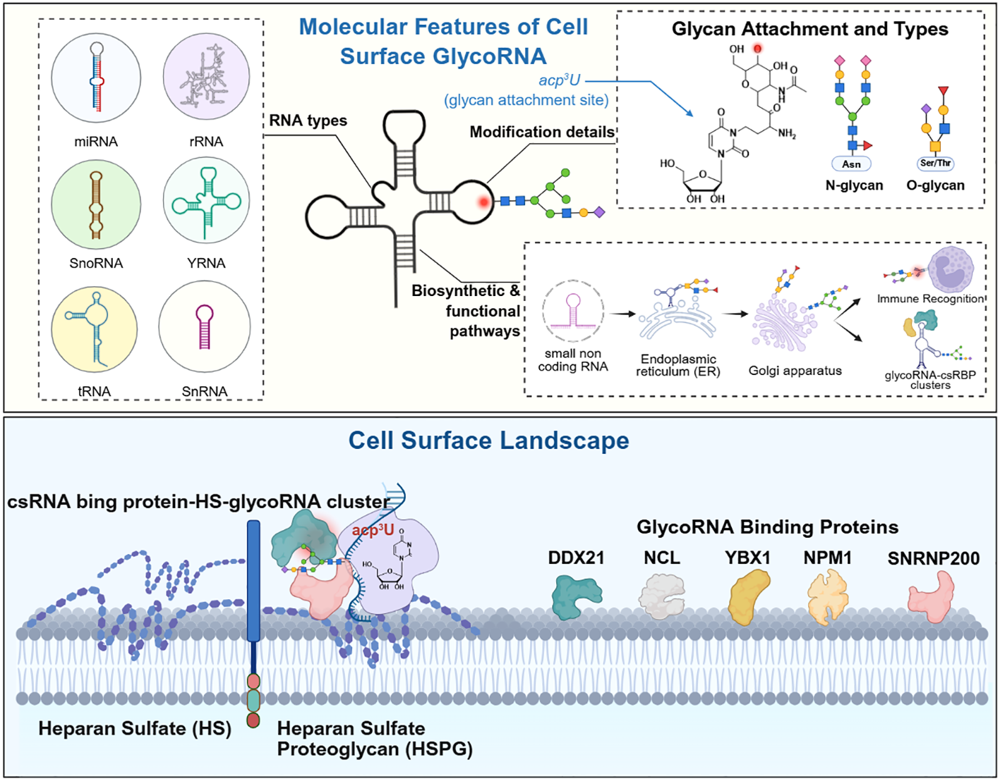
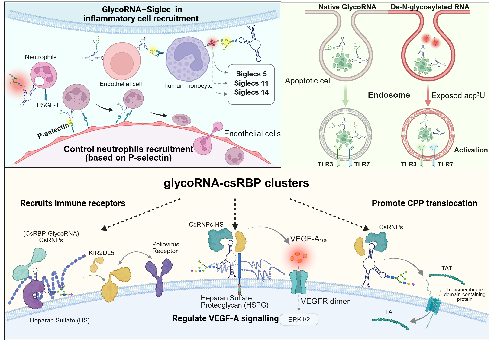
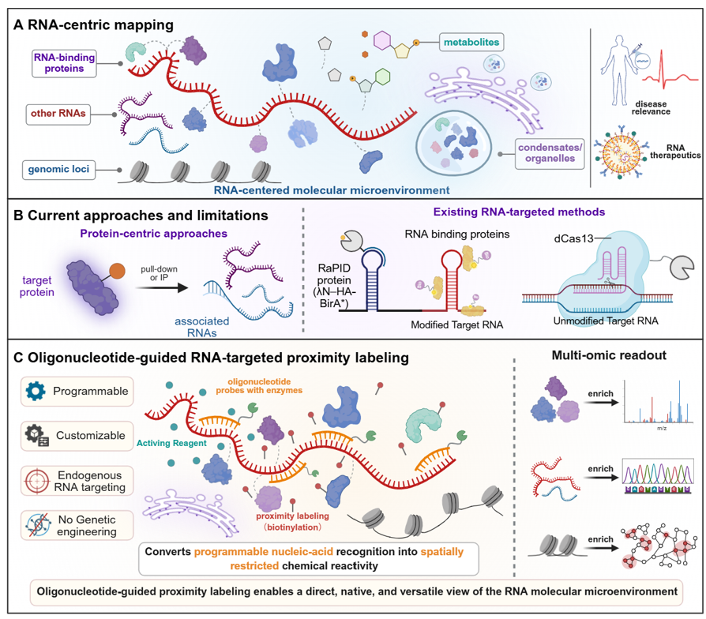
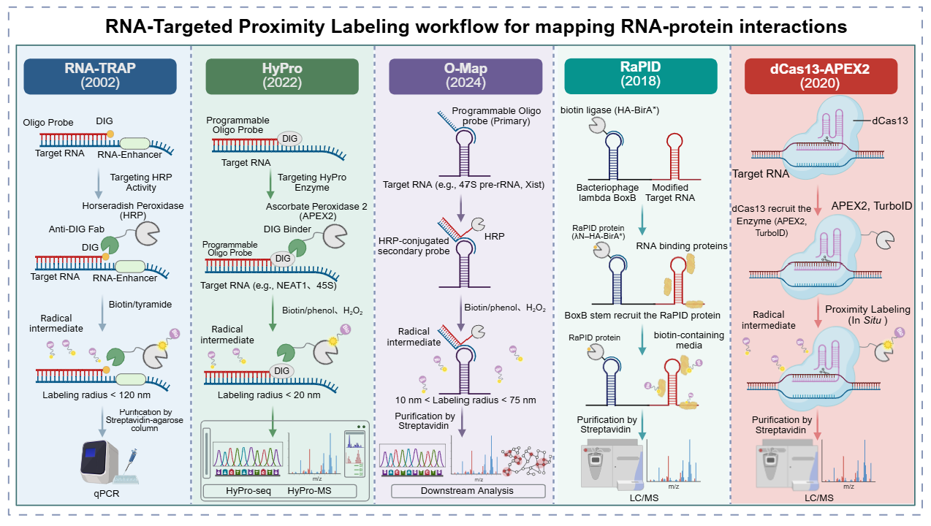
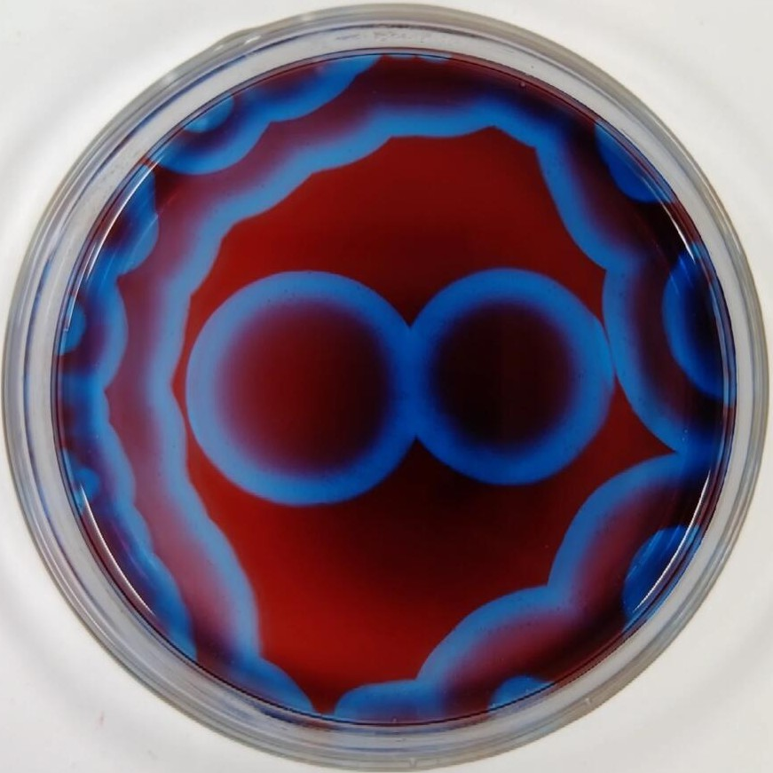
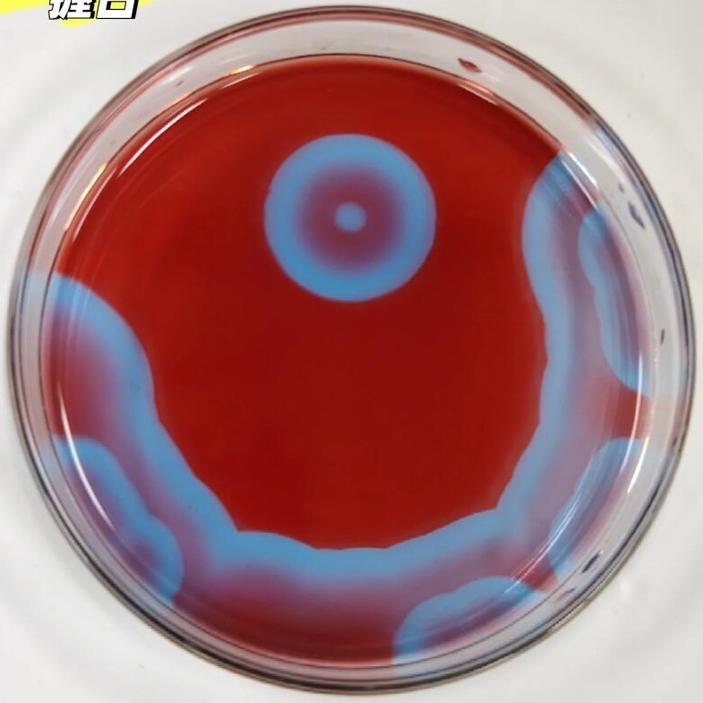
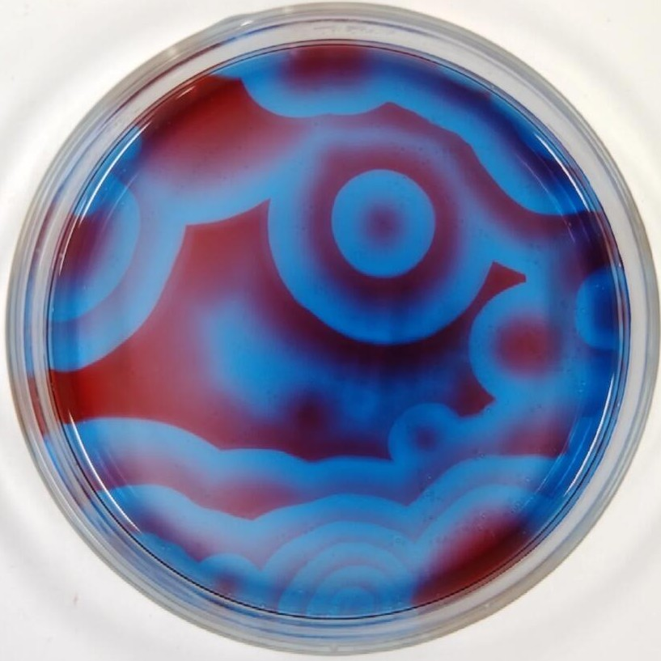
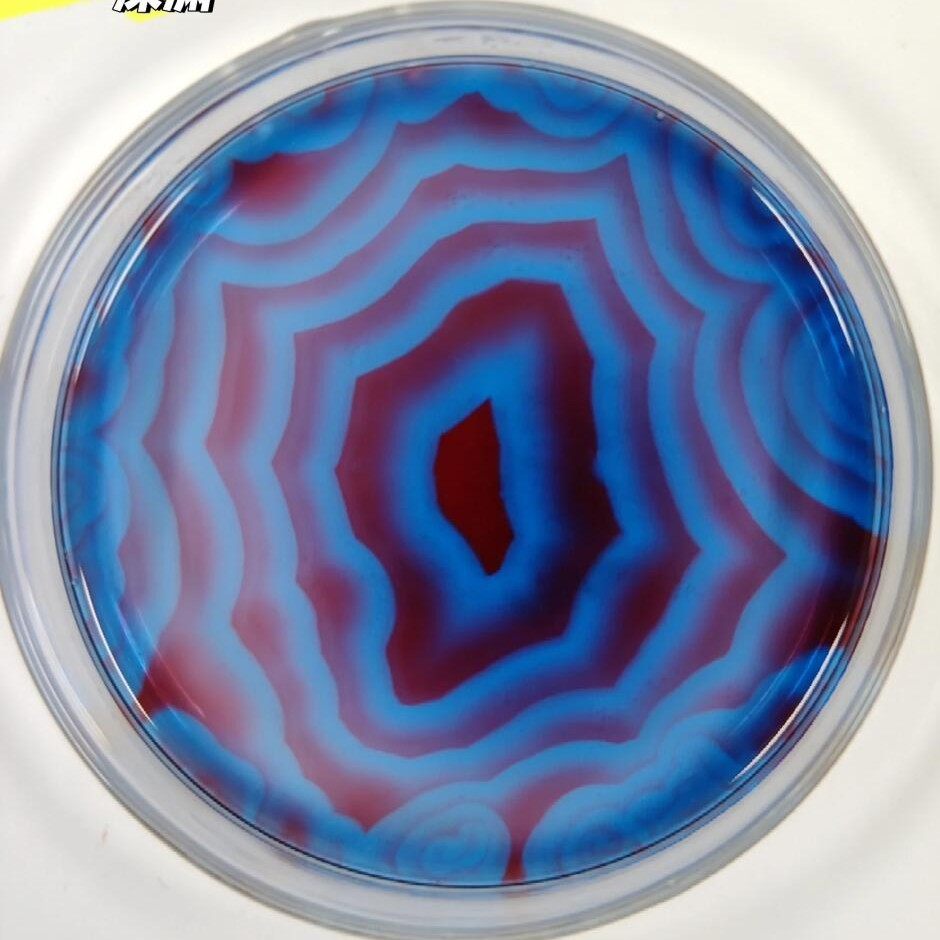
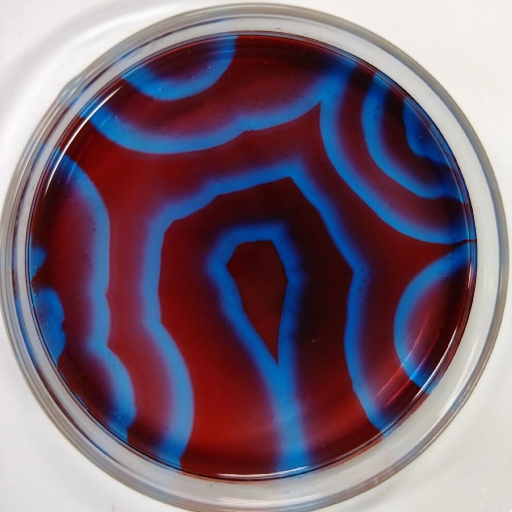
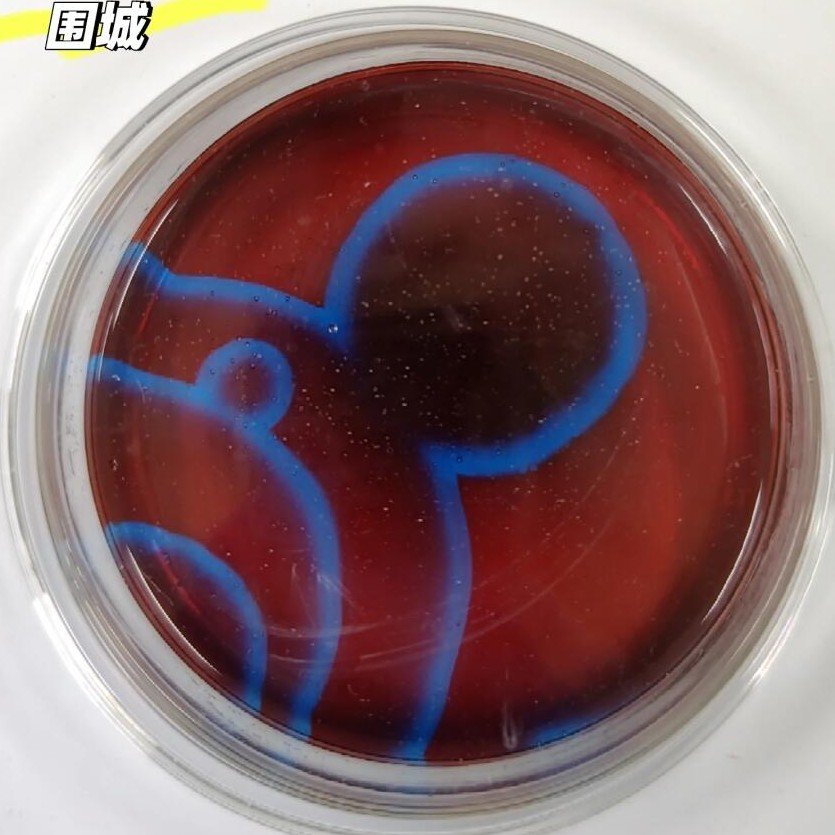

Programmable sequence-resolved in situ profiling of glycoRNA-protein interactomes by GlycoRNA-Map
Co-author · Structural modeling and experimental support
I graduated from Nanjing University in 2026 with a degree in chemistry, and I’m applying to PhD programs in the United States. My main research interest is chemical biology. I made this site to keep track of the skills I’ve picked up and the ideas I’d like to explore.
Outside the lab, I enjoy photography and writing down little things I want to remember. I’m always daydreaming about my next trip. I’d like to leave enough room in my life to go wherever curiosity takes me.
I’d love to make new friends. If you’d like to say hi or chat about something you’re interested in, email me at jl601@rice.edu.

Co-author · Structural modeling and experimental support
Co-first author · Cell-surface RNA and immune recognition
First author · Data analysis, figures, and manuscript drafting
Drawing scientific figures is one of my favorite hobbies. A beautiful figure always brightens my day, so I wanted to share a few of my favorites here.
I drew all four illustrations by hand using Adobe Illustrator and BioRender, without AI. Select any figure to see it at full size.




Figures 1 and 2 appear in Zhang, Liao, Chang, Shao & Ma (2026), Cell surface RNAs define a new interface for immune recognition. Created with BioRender under a publication license.
This is where I’ll share little reflections on research and everyday life, adding to them as I go.





